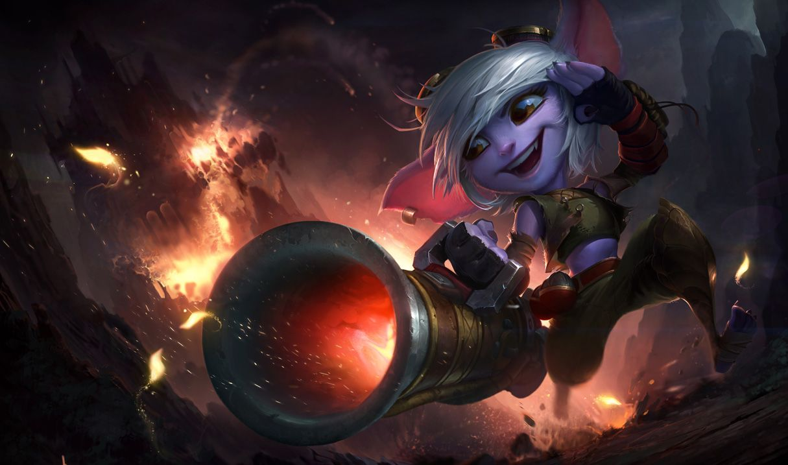

트리스타나
트리스타나
트리스타나, 요들 사수
Tristana, the Yordle Gunner

1. 배경
2. 스킬
2.1. 패시브 - 정조준(Draw a Bead)
2.2. Q - 속사(Rapid Fire)
2.3. W - 로켓 점프(Rocket Jump)
챔피언 처치에 관여하거나 챔피언에게 쌓인 최대 중첩 폭발 화약 스킬이 터질 경우 이 스킬의 재사용 대기시간이 초기화됩니다.
2.4. E - 폭발 화약(Explosive Charge)
사용 시: 트리스타나가 적이나 포탑에 폭탄을 부착해 4초 후 주변 적에게 물리 피해를 입힙니다. 피해량은 치명타 확률의 33.33%만큼 증가합니다. 폭탄이 부착된 대상을 기본 공격이나 스킬로 공격 시 피해량이 30%씩 증가합니다.(이 효과는 최대 4번까지 중첩됩니다.)
4번 중첩되면 폭탄이 즉시 폭발합니다.
2.4. R - 대구경 탄환(Buster Shot)
3. 장점
압도적인 누킹과 킬 캐치 능력
준수한 후반 안정성
조건부로 크게 증폭되는 캐리력
준수한 라인 클리어와 초고속 포탑 철거
안정적인 라인전 (솔로 라인)
그다지 어렵지 않은 조작
4. 단점
하자가 많은 라인전 (바텀)
템빨을 많이 타는 DPS
대치전에 취약함
탱커 처리 문제와 높은 스킬 의존도
탱커 처리와 라인 클리어에 불리한 낮은 DPS (바텀)
강제되는 교전과 그에 상응하는 리스크

저작물은 CC BY-NC-SA 2.0 KR에 따라 이용할 수 있습니다. (단, 라이선스가 명시된 일부 문서 및 삽화 제외)